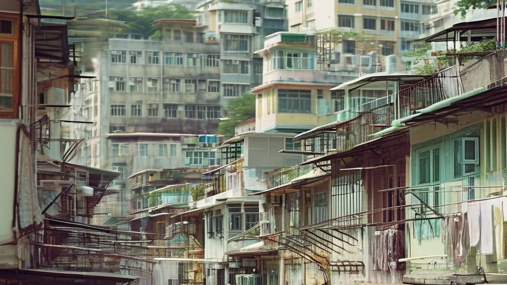
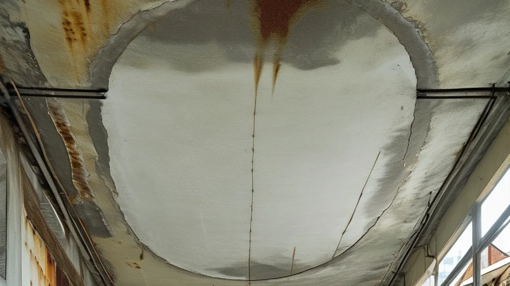
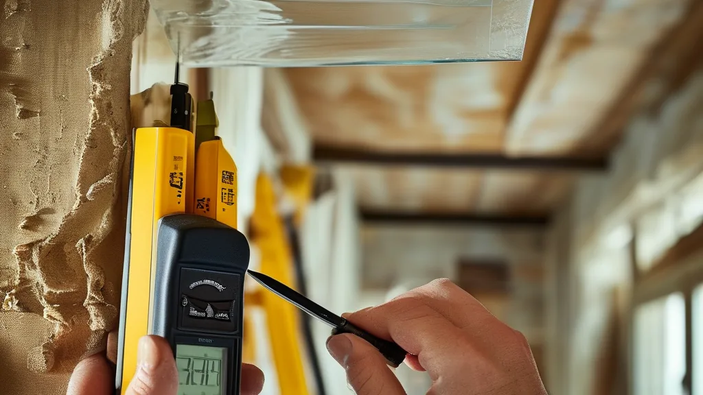
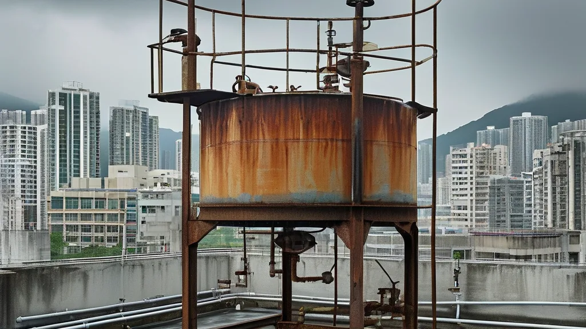
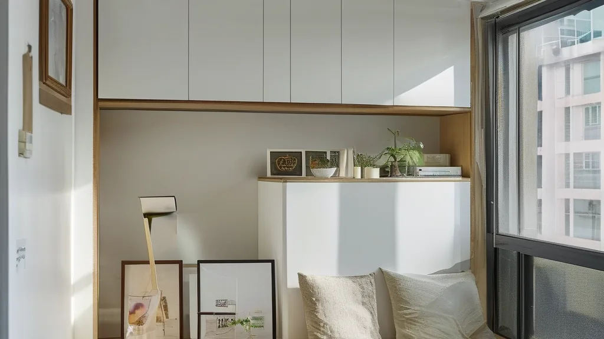

深水埗380呎頂層天花滲水兩年：昌哥教落手前先查源頭

📍 場景：深水埗一幢 1972 年落成唐樓，380 呎頂層兩房｜受訪：蔡太（業主）｜同行：雲蕾、昌哥（泥水 28 年）｜記錄：張丹楓｜日期：2026 年 11 月 27 日｜WhatsApp 報價：852 5190 2328
序幕：凌晨四點半嘅報道，朝早七點嘅樓梯
11 月 27 日凌晨 4 時 32 分，文匯報「滲水系列」刊出一單個案：深水埗一幢唐樓嘅頂層業主，2020 年天台加裝一個 9,000 公升消防水缸之後，單位天花長期滲水，石屎剝落、鋼筋外露，業主喺水務署、屋宇署、消防處之間走咗一年多，到 10 月仍然等緊換缸報價。報道嘅採訪日期係 11 月 27 日，但個案本身已經拖足兩年。
我同雲蕾朝早七點到樓下，樓梯已經濕。七層唐樓冇電梯，扶手一路摸上去都係一層薄薄嘅水氣。蔡太開門第一句唔係招呼，係問：「你哋係咪睇完就走？」
呢句我聽得多。滲水呢件事，最磨人嘅唔係水，係等——等部門回覆、等法團開會、等承辦商報價。等到業主自己都唔信有人會跟到底。
第一幕：天花板嗰幅「地圖」
380 呎兩房，樓齡 54 年。廚房對出嘅天花有一幅不規則水痕，由牆角伸到廳中間，邊緣有一圈白色結晶，中間兩處石屎已經剝落，露出銹色鋼筋。用手指輕按，粉塵即時跌落嚟。
「我唔想搞咁多，你哋幫我封咗個天花，批過灰、油過油，睇唔出就得。我趕住搬返嚟住。」
「封咗佢，水去邊？水會揾第二個位爆出嚟。到時你新做嘅櫃、你個電掣位、你張床，全部報銷。呢個唔係裝修問題，係次序問題。」
半個鐘後昌哥到。佢做泥水 28 年，袋入面永遠有三樣嘢：濕度計、膠膜、一支小鐵筆。濕度計貼上牆身，讀數 28%；正常室內牆身大約 12% 至 15%。佢再剪一塊 300 毫米乘 300 毫米嘅透明膠膜，用膠紙四邊封實喺天花，話等 48 小時再睇。
「如果膠膜入面有水珠，即係水係由上面落嚟，唔係你屋企自己出水。呢個測試唔使儀器、唔使拆嘢，你自己都做得到。」
佢再用鐵筆輕敲天花，聲音一實一空。空嗰幾格，就係石屎同鋼筋已經分離嘅位置。呢啲位唔可以批灰了事，要鑿走鬆脫部分，見到實底為止。

第二幕：天台嗰個九千公升水缸
我哋上樓梯上天台。水缸用鐵架托高，缸身有一圈銹漬，接駁位纏住舊膠布，去水管沿住牆腳入屋。旁邊有一條新加嘅鹹水管，明顯係後來改過。
《消防安全（建築物）條例》第 572 章要求 1987 年或以前落成嘅綜合及住用建築物提升消防設施，所以呢類舊樓近年陸續加裝消防水缸。問題係，缸裝好之後，保養同維修責任往往冇人講清楚。
「換缸要幾十萬，三十幾戶分。有啲業主話佢住低層，唔關佢事，唔肯俾。」
「缸係公用部分，但漏水係頂層單位受。你唔可以逼人俾錢，但你可以逼件事入議程：書面要求、開會紀錄、報價比較，一樣都唔少得。」
報道入面有個位我好記得：滲水辦回覆業主，話公共地方滲水唔涉及公眾衞生妨擾，唔屬佢哋直接執法範圍，只可以轉介。呢句係制度缺口，唔係業主做錯咗啲乜。
「我一個人，點逼法團開會？我連邊個係主席都係今日先知。」
「你唔係逼人，你係要一份書面回覆。今日開始，每次上去睇水痕都影相、寫日期，交管理處一份副本。三個月之後，你就有一疊紙；冇紙，你講咩都係得個講字。」

第三幕：裝修次序，唔係先做櫃
蔡太原本嘅計劃係：換地板、做全屋櫃、油牆，一個月內入伙。我同佢講，呢個次序要掉轉。
第一步，查源頭。天花膠膜測試做 48 小時，同時要求管理處檢查天台水缸接駁位同去水管；有需要就請註冊檢驗人員或測量師出書面意見。源頭未確認為「公共部分」之前，唔好自己動手封板。
第二步，修補結構。鑿走鬆脫石屎到實底，鋼筋除銹後涂防銹漿，再用聚合物修補砂漿分兩層批回，每層厚度控制在 10 毫米以內，等乾透。呢步做唔好，之後幾靚嘅油漆都會再爆。
第三步，防潮，然後先做木作。天花做防潮底漆，牆腳做 300 毫米高嘅防水塗層。櫃身離地 100 毫米，櫃頂同天花留 50 毫米通風隙；對正水缸去水管嘅位置，留一個 300 毫米乘 300 毫米檢修口。
「點解你唔可以順手幫我封埋？我俾多啲錢，你一次過做完唔好咩？」
「唔係錢問題。你今日封咗，聽日水喺櫃背爆出嚟，我哋要拆返個櫃出嚟，你俾兩次錢。留個檢修口，將來師傅伸手入去就睇到，唔使拆。」
價錢我照寫低，唔怕你比較：
項目一：天花防潮底、批灰及修補（約 38 平方米） $8,600
項目二：廳房訂造櫃改離地活動式（3 組） $18,400
項目三：廚房吊櫃改裝及檢修口 $4,900
項目四：運輸、安裝及完工清潔 $3,200
合計（故事報價） $35,100
以上係故事報價，實際以度尺為準。同樣一個 380 呎單位，天花板剝落範圍大啲、要搭棚做外牆，價錢就會唔同。

尾聲：三日後，一份入到議程嘅紙
三日後，蔡太做咗三件事：把一疊有日期嘅相片交去管理處；書面要求法團把「天台水缸檢查」加入下次會議議程；同我哋講，木作部分等檢查報告出咗先落單。
我哋當日只做咗臨時處理：天花鬆脫石屎鑿走、鋼筋除銹、批一層修補砂漿，其餘全部留白。蔡太初頭嫌醜，後來睇到膠膜入面嘅水珠，就冇再出聲。
報道入面有測量師提出，即將成立嘅樓宇維修支援及服務局應該有一個固定窗口，跟進公共地方滲水呢類跨部門個案；亦建議法團為公用部分買第三者責任保險、設維修基金。呢兩點我認同，因為我哋喺現場見到嘅，從來唔係技術問題，係「邊個負責」四個字。
離開嗰陣，蔡太問我：「咁我幾時可以開始做櫃？」我答：等到你手上有一份寫明源頭嘅紙，就係嗰日。之前睇過觀塘郭太排裝修期、深水埗鄧生講法團嘅讀者，應該會明白呢句唔係推搪。

❓ 天花滲水三問
Q1：天花滲水，可唔可以叫裝修師傅直接封板批灰？
唔建議。源頭未查清就封板，水會沿結構走去第二個位，通常係櫃背、電掣位或窗台，之後要拆返木作先處理到，等於俾兩次錢。正確次序係先做膠膜測試及濕度讀數，確認水源係來自樓上單位、天台公用部分抑或外牆，再決定修補方法。
Q2：公共地方滲水，滲水辦唔執法，業主可以點做？
先固定證據：相片要有日期、水痕位置要一致、濕度讀數要記錄，並以書面交管理處及法團，要求把個案列入會議議程。同時可向屋宇署及消防處查詢大廈公用設施嘅狀況。若涉及結構安全，應請註冊檢驗人員或測量師出書面意見。呢啲都係業主自己可以做、唔使等別人批准嘅動作。
Q3：頂層單位做訂造櫃，點樣預留檢修位？
三個數字：櫃身離地 100 毫米、櫃頂留 50 毫米通風隙、檢修口 300 毫米乘 300 毫米，位置要對正去水管或水缸接駁位。活動式櫃腳比封死踢腳好，將來漏水可以直接拉開櫃檢查。做之前同師傅講清楚檢修口位置，唔好等安裝完先後補。
本文配圖均為 AI 場景示意圖，僅供場景參考，並非真實工地照片或業主影像。
你個單位天花都有水痕？先影相，再問價。
📱 一鍵 WhatsApp 張丹楓